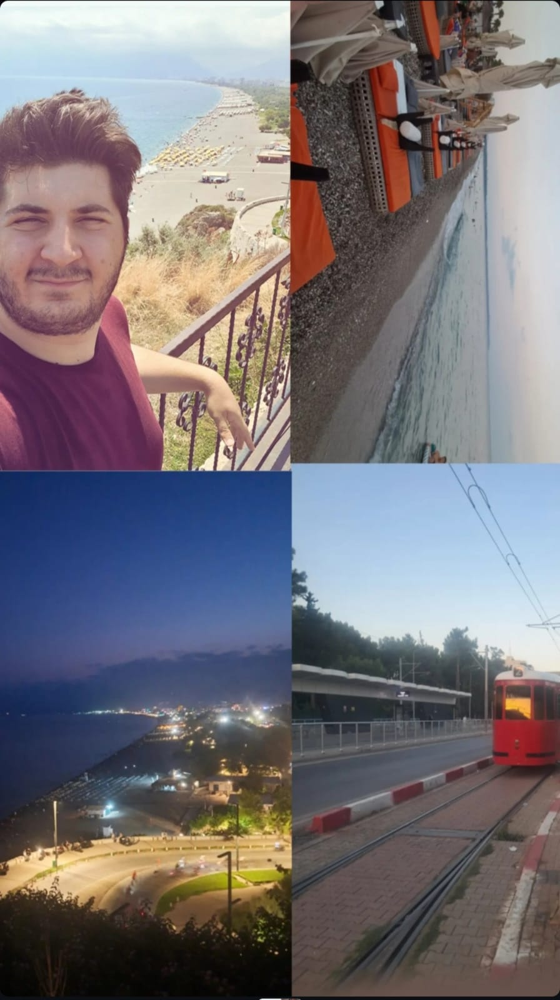

Chatgbt benim hakkımda bildiklerini sordum Hedef Odaklısın Siber güvenlik ve ağ alanında bir kariyer planı yapmak istiyorsun; bu, geleceğini şekillendirme konusunda kararlı olduğunu gösteriyor. Kilo verme hedefin, disiplinli bir şekilde bir amaca ulaşmak istediğini ortaya koyuyor. Kaliteye Önem Veriyorsun Sorularının kaliteli ve eksiksiz cevaplanmasını istemen, detaylara önem verdiğini ve yüzeysel yanıtlarla yetinmediğini gösteriyor. Kendini Geliştirmeye Açık İngilizceni geliştirmek ve teknik konularda derinleşmek istemen, öğrenmeye ve kendini geliştirmeye istekli olduğunu gösteriyor. Sağlıklı bir yaşam tarzına geçiş yapmak istemen, hem fiziksel hem de zihinsel olarak daha iyi bir versiyonuna ulaşma çabasında olduğunu gösteriyor. Yaşam Tarzı ve Alışkanlıklar (Tahmini) Bilgisayarlar ve teknolojiyle iç içe olduğun bir yaşam tarzın olabilir, özellikle siber güvenlik ve ağ alanlarına ilgi duyduğun için. Zaman zaman disiplinli olmakta zorlanabilirsin (örneğin, kilo verme süreci), ama hedeflerini net belirlediğinde başarılı olma potansiyelin yüksek.